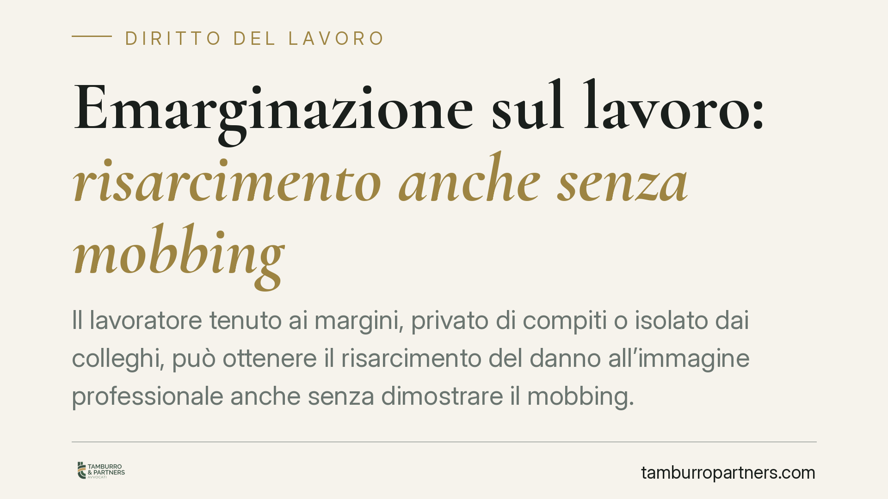

Emarginazione sul lavoro: risarcimento anche senza mobbing
Il lavoratore tenuto ai margini, privato di compiti o isolato dai colleghi, può ottenere il risarcimento del danno all'immagine professionale anche senza dimostrare il mobbing. La Cassazione separa le due tutele: l'emarginazione lesiva della dignità professionale rileva di per sé, sulla base dell'obbligo del datore di proteggere l'integrità del dipendente. Una distinzione che amplia le possibilità di tutela.

Il principio affermato dalla Cassazione
La Corte di Cassazione torna su un tema ricorrente nel contenzioso lavoristico: l'emarginazione del dipendente sul posto di lavoro. Il punto chiave è che il risarcimento per la lesione dell'immagine professionale può essere riconosciuto anche quando manca la prova del mobbing.
Il mobbing, infatti, richiede un quadro probatorio rigoroso: una serie di condotte ostili, reiterate nel tempo e collegate da un intento persecutorio unitario. Provare questo disegno è spesso difficile. La Corte chiarisce che la tutela del lavoratore non si esaurisce in quella figura: l'emarginazione che svuota la posizione professionale del dipendente può fondare un autonomo diritto al risarcimento.
Inquadramento normativo
Il riferimento centrale è l'art. 2087 c.c., che impone al datore di lavoro di adottare le misure necessarie a tutelare l'integrità fisica e la personalità morale del lavoratore. Questa norma copre non solo la sicurezza fisica, ma anche la dignità e la considerazione professionale del dipendente nell'ambiente di lavoro.
Si affianca l'art. 2103 c.c., che disciplina le mansioni e vieta forme di dequalificazione. Quando il lavoratore viene privato di compiti significativi, isolato o relegato a un ruolo marginale, si verifica una compromissione della sua professionalità che la giurisprudenza qualifica come danno risarcibile, distinto e ulteriore rispetto al mobbing.
La differenza è sostanziale. Il mobbing presuppone l'intento persecutorio; la lesione fondata sull'art. 2087 c.c. prescinde da esso e si concentra sull'effetto oggettivo della condotta datoriale sulla dignità professionale del dipendente.
Implicazioni pratiche per il lavoratore
La pronuncia ha un impatto concreto sul piano probatorio. Il lavoratore che si trovi emarginato non è più obbligato a ricostruire l'intera architettura del mobbing — la sistematicità delle condotte, il dolo, la finalità vessatoria — per ottenere tutela.
È sufficiente dimostrare:
- l'esistenza di una condotta datoriale che lo ha isolato o privato di mansioni adeguate;
- il pregiudizio subito sulla propria immagine e considerazione professionale;
- il nesso tra la condotta e il danno.
Il danno all'immagine professionale può manifestarsi in vari modi: perdita di credibilità interna, marginalizzazione rispetto ai colleghi, impoverimento delle competenze per inattività forzata. Si tratta di un pregiudizio che incide sulla collocazione del lavoratore nell'organizzazione e, potenzialmente, sulle sue prospettive di carriera.
Va precisato un punto: il danno non è automatico. Non basta lamentare l'emarginazione; occorre allegare e provare il pregiudizio concreto, anche tramite presunzioni gravi, precise e concordanti.
Implicazioni per il datore di lavoro
Dal lato datoriale, la pronuncia conferma che la gestione delle posizioni lavorative deve essere coerente e documentabile. Riassegnazioni di mansioni, esclusioni da progetti o riorganizzazioni vanno motivate da ragioni organizzative oggettive.
L'assenza di un intento persecutorio non mette al riparo da responsabilità: ciò che conta è l'effetto della condotta sulla professionalità del dipendente. Una scelta gestionale neutra sul piano soggettivo può comunque generare un obbligo risarcitorio se determina la marginalizzazione del lavoratore.
Cosa fare in concreto
- Documentate ogni episodio rilevante: email, ordini di servizio, modifiche di mansioni, esclusioni da riunioni o progetti. La prova si costruisce con tracce oggettive e datate.
- Conservate il confronto tra le mansioni originarie e quelle attuali, per evidenziare l'eventuale svuotamento del ruolo.
- Raccogliete testimonianze di colleghi sull'isolamento o sulla privazione di compiti, ove possibile.
- Valutate con un legale se la situazione integri una dequalificazione ex art. 2103 c.c. o una lesione della personalità morale ex art. 2087 c.c., indipendentemente dal mobbing.
- Datori di lavoro: formalizzate le ragioni organizzative di ogni riassegnazione e verificate la coerenza tra il ruolo formale e i compiti effettivamente affidati.
La distinzione tracciata dalla Cassazione amplia le tutele del lavoratore, ma sposta l'attenzione sulla qualità della prova. Consigliamo, in entrambe le prospettive, un'analisi preventiva della documentazione prima di intraprendere o difendersi da un'azione risarcitoria.
Disclaimer
Contributo informativo a cura di Tamburro & Partners - Avv. Giuseppe Tamburro. Non costituisce parere legale.
Ogni storia di lavoro ha i suoi tempi.
Se gestisci HR e vuoi un confronto su contenzioso, ispezioni o licenziamenti, scrivi allo studio. Ti rispondiamo entro un giorno lavorativo.